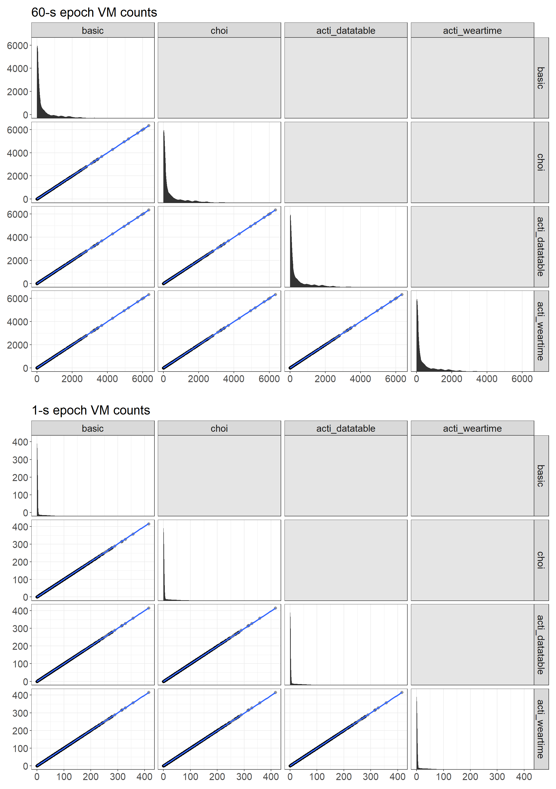

Actilife software procedures to get vector magnitude counts: are the computations exactly the same?
Introduction
When we measure movement using an ActiGraph accelerometer, we can access two kinds of signals (with GT1M devices and more recent generations of devices): the raw acceleration signal, now expressed in G force units; and the activity counts signal, that describes the amount of body acceleration performed over defined epochs (e.g., 1-s epochs) (Chen & Bassett, 2005; John & Freedson, 2012).
Activity counts have been commonly used in physical activity studies to estimate time spent in different movement intensities or total amount of movement performed during the day (Bassett et al., 2015). In general, the counts of interest are related to the vertical axis or the vector magnitude (VM), VM being the norm of the movement vector defined as \(VM = \sqrt{x^2 + y^2 + z^2}\), with \(x\), \(y\), and \(z\) the counts related to each accelerometer axis for each epoch, respectively.
When using an ActiGraph accelerometer, VM can be obtained when exporting data from Actilife software to a spreadseet, as for example when exporting the whole dataset to DataTable format, or when exporting the detected wear time epochs (after wear time analysis) to a simple .csv file. Other software programs allow getting VM data, such as R software along with the PhysicalActivity R package (Choi et al., 2021). The PhysicalActivity package is well known for its implementation of a nonwear time detection algorithm (Choi et al., 2012), but this package also contains a specific function (the readActigraph() function) to read .agd files and then to compute VM.
An interesting thing with R packages is that code is open, allowing to know exactly what computations are performed when a function returns a result. For example, the readActigraph() function from the PhysicalActivity package actually uses a ceiling() function on the computed VM data. This means that from each inital VM value computed with the function, the function returns at the end the smallest integer that is not lower than the considered value (e.g., for an initial VM value of 4.33, the function will actually return the value 5). Thus, the VM data that are finally obtained from the readActigraph() function are a little transformed. When using Actilife software, it is however more complicated to know what computations are exactly performed when getting VM values. At the end of a personal analysis, I was surprised to see that VM values could be slightly different depending on the procedure used to export data to spreadsheets from Actilife software. Thus, I have performed some analyses to understand how VM values provided by Actilife software are exactly computed and to know to what extent Actilife computation procedures may differ from each other and from other software ressources, specifically the readActigraph() function from the PhysicalActivity R package.
Methods
Data used in this post were initially obtained following a personnal mesurement of physical behaviour performed using an ActiGraph wGT3X-BT device (sampling rate: 90 Hz) worn at the hip during two weeks. Once the measurement completed, data were downloaded from the device using Actilife software v6.13.4 and two .agd files were created by accumulating activity counts using either 60-s epochs or 1-s epochs, and using the normal filter for both files. Finally, I have produced four different datasets for both 60-s epochs and 1-epochs:
- A dataset containing VM data computed in R using the VM formula on the .agd file data and a rounding function (2 digits) on the VM values (this procedure is called
basicthereafter). - A dataset containing VM data computed in R using the
readActigraph()function from thePhysicalActivityR package on the .agd file data (this procedure is calledchoithereafter). - A dataset containing VM data computed by Actilife software when exporting data to DataTable format (this procedure is called
acti_datatablethereafter). - A dataset containing VM data computed by Actilife software when exporting data after wear time analysis (this procedure is called
acti_weartimethereafter).
Then, for all datasets containing 60-s epochs and 1-epochs, I have applied in R the wearingMarking() function from the PhysicalActivity R package to finally keep only the wear time epochs from Day 2. This allowed me to make all the datasets comparable for a given epoch length and to reduce their size for faster analysis. The 60-s epoch datasets had 1055 observations each, while the 1-s epoch datasets had 63300 observations each.
To explore potential differences in VM values depending on the software procedure that was used, I have performed the followings: scatter plots for bivariate analyses using all the VM values; bar plots to look at the differences in total VM counts; table view to look at a short sample of VM values obtained from each software procedure.
The R code written to produce data and results can be viewed when clicking on the Code buttons in the remaining part of the post.
Results & Discussion
Figure 1 shows the bivariate relationships between the VM values obtained from the different software procedures. The graphics placed in the diagonale of the figure from the top-left corner to the bottom-right corner show the distributions of the counts for the corresponding software procedures without using the y-scale of the figure. Each procedure seems perfectly correlated with each other.

Figure 2 (top panel) shows that total VM counts are different between the tested software procedures. Indeed, total VM counts ranged from 415,312 counts (acti_weartime procedure) to 415,600 counts (choi procedure) for the 60-s epoch datasets, and from 461,795 counts (acti_weartime procedure) to 466,017 counts (choi procedure) for the 1-s epoch datasets. Figure 2 (bottom panel) also shows that the differences between the procedures for total VM counts were higher when using 1-s epochs in comparison with the use of 60-s epochs. This last result may be put into relation with the fact that there were more observations when using 1-epochs compared to 60-s epochs, thus letting more room for total differences. Of note, the basic procedure and the acti_datatable procedure led to the same results, suggesting that Actilife software uses the VM formula and then a rounding procedure (2 digits) to provide VM values when exporting to DataTable-format spreadsheets.
Now, it remains to investigate what computations may be related to the acti_weartime procedure and why there were such differences between the various computation procedures. To do this, let’s take a look at a sample of VM values from the different datasets with 60-s epochs (Figure 3).
From Figure 3, we can guess that Actilife software actually uses two different rounding methods when computing VM values with the acti_weartime procedure, these methods depending on the decimal part of the initial VM value. Assuming the values from the basic procedure can be used as reference to provide an idea of what should be initial VM values, we can describe these two methods as follows:
- Method 1: When the decimal part of the initial VM value is >= 0.5, the value of the integer directly above the initial value of VM is returned;
- Method 2: When the decimal part of the initial VM value is < 0.5, the value of the integer directly below the initial value of VM is returned.
Thus, we can understand why the choi procedure provides total VM counts that are clearly larger than those from the other procedures: while the basic and acti_datatableprocedures will keep the decimal part of the initial VM values, the choi procedure will always return values larger than the initial values of VM if the decimal part is above 0, while the acti_weartime procedure will return either larger VM values or smaller VM values than the initial VM values depending on if the decimal part of the initial VM values is >=0.5 or not, respectively.
Conclusion
In this post, we have seen that two procedures related to Actilife software to export VM data provide different values from each other and also differ from the readActigraph() function from the PhysicalActivity R package:
- The
acti_datatableprocedure (DataTable format from Actilife software) only rounds (2 digits) the VM values obtained using the basic VM formula. - The
acti_weartimeprocedure (data obtained after wear time analysis from Actilife software) returns the integer directly above the initial VM value when the decimal part of the initial VM value is >= 0.5, otherwise it returns the integer directly below the initial VM value. - The
choiprocedure always returns the integer directly above the initial VM value when the decimal part of the initial VM value is >0.
While the two tested Actilife procedures provide quite similar total VM counts values, the readActigraph() function seems to provide clearly larger total VM counts values at the end of the day. However, one could still consider such a difference as trivial. Indeed, the absolute difference of 4222 counts between the choi procedure and the acti_weartime procedure, when using 1-s epochs, represents only 0.9% of the total VM counts related to the acti_weartime procedure over the whole day. We could have the same perspective on the differences observed between total VM counts from the 60-s epoch datasets and 1-s epoch datasets. These differences are clear, but could be considered as trivial compared to the expected absolute value of total VM counts over a whole day. That’s being said, if there was no rationale to create such different procedures, it could be good thing to make all of these procedures similar from a computational point of view, for example by keeping the simple rounding procedure of the VM values to not distort the inital data.